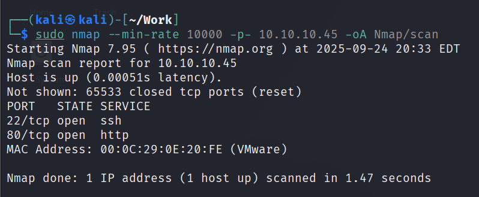
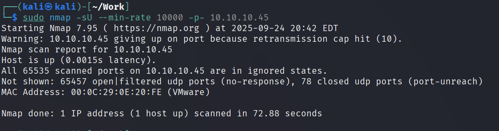
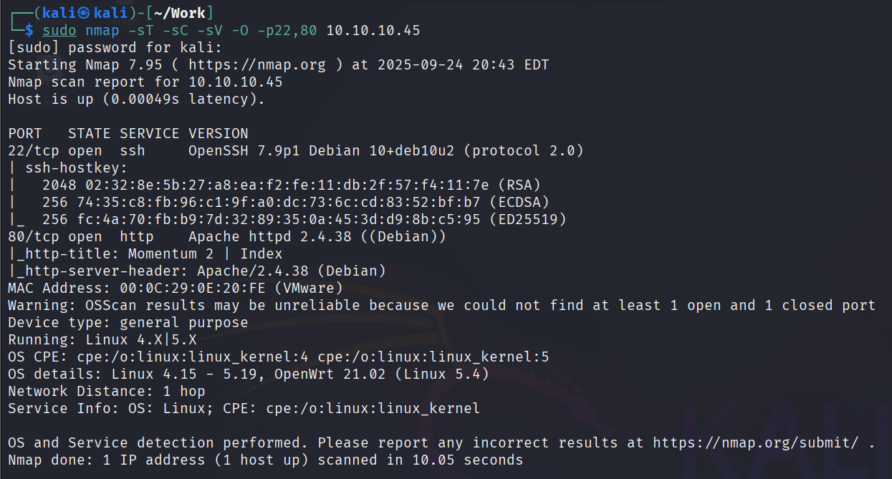
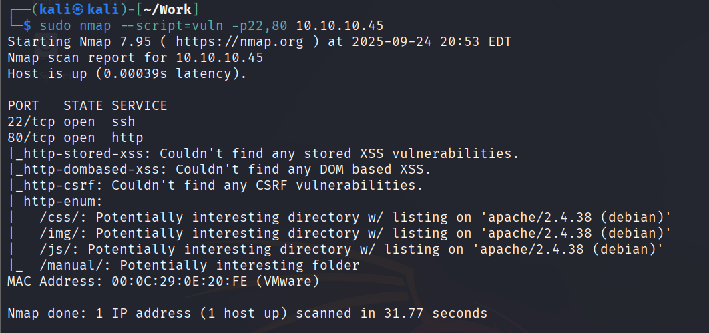
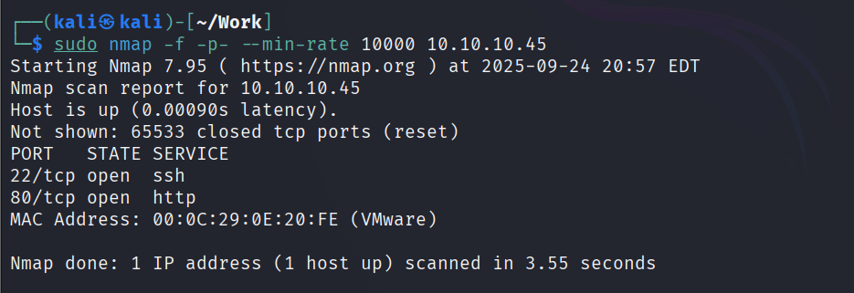

2 minutes
关于扫描工具 nmap 的使用心得
以下命令均以 kali本地地址为 10.10.10.5，靶机地址为 10.10.10.45 为案例
主机发现
在打本地离线靶机的时候常常需要主机发现，此时可以使用以下命令。
sudo nmap -sn 10.10.10.0/24
-sn 为 –skip -port-scan 的缩写，意思为不要执行传统的端口扫描，扫描地址为 0/24，该命令为笔者打本地离线机器最常用的主机发现命令，执行结果如下。

其中 10.10.10.1 与 10.10.10.2 、10.10.10.254是系统默认地址，10.10.10.5 是 kali 地址，所以 10.10.10.45 就是靶机的地址。
TCP 端口扫描
在主机发现后一般要对存活的机器进行端口扫描，可以使用以下命令。
sudo nmap --min-rate 10000 -p- 10.10.10.45 -oA nmap/scan
一般可以加上 -sT 指定对 TCP 端口进行扫描，但是实战中有时候指定 -sT 后反而扫描不全，所有去除 -sT；可以使用 -oA 命令将扫描结果全格式保存到 nmap/scan 目录下以便于随时回顾，命令执行结果如下。

可以发现靶机开放了 22 ssh 端口和 80 http 端口。
UDP 端口扫描
在执行完 TCP 扫描后应该进行 UDP 扫描以免有漏掉的 UDP 端口，可以使用以下命令。
sudo nmap -sU --min-rate 10000 -p- 10.10.10.45 -oA nmap/udp-scan
命令结构与 TCP 扫描类似，多了个 -sU 指定对 UDP 端口进行扫描，执行结果如下。

可以看到 UDP 没有扫描到开放的端口。
TCP 详细情况扫描
在扫描完成后要对 TCP 端口的详细情况进行扫描，可以使用以下命令。
sudo nmap -sT -sC -sV -O -p22,80 10.10.10.45
-sT 指定对 TCP 端口，-sC 使用默认脚本扫描，-sV 进行服务和版本的探测，-O 进行操作系统的探测，指定端口为 22,80，执行结果如下。

可以看到 nmap 列出了端口详细情况。
默认脚本扫描
在执行完端口详细扫描后一般还会执行 nmap 的 默认脚本扫描，可以执行以下命令。
sudo nmap --script=vuln -p22,80 10.10.10.45
–script=vuln 指定以 nmap 的默认脚本进行扫描，指定端口为 22、80，执行结果如下。

可以看到 nmap 已经对端口进行了默认脚本扫描，并输出了结果。
数据包分片扫描
有些防火墙或 WAF 在处理完整数据包时会进行检测，但对分片数据包的处理可能不完善。使用 -f 参数将 TCP 数据包分片，可能绕过某些防护设备检测。通过分片发送探测包，降低被拦截的概率，尝试发现隐藏的开放端口。
一个完整的 IP 包包含：
IP头 + TCP/UDP头 + 可能的应用层链路
-f 参数在 IP 层将这个包拆成多片发送
第一个分片：IP头 + TCP/UDP头 + 一段数据
后续分片： IP头 + 剩余数据
传统防火墙、简单包过滤器只检查第一个分片，直接放行后续数据包
sudo nmap -f -p- --min-rate 10000 10.10.10.45

可以看到靶机开放了 22、80 端口。
源端口、随机端口顺序、慢速扫描
源端口扫描
sudo nmap --source-port 53 -p- --min-rate 10000 10.10.10.45
防火墙可能允许特定源端口流量通过（例如 53 是 DNS 常用端口）。通过伪装端口为常用服务端口，坑那个绕过端口过滤规则，模拟合法流量，探测目标是否对特定源端口的请求有所响应。
随机端口扫描
sudo nmap -r -p- --min-rate 10000 10.10.10.45
有些 WAF 或 IDS 会检测连续的端口扫描模式，使用 -r（按顺序扫描，但结合 –randomize-hosts 可随机化目标）可以打乱扫描顺序，降低被识别为扫描行为的可能性。通过非典型的扫描模式，尝试绕过基于模式匹配的防护规则。
慢速扫描
sudo nmap -T2 -p- 10.10.10.45
使用更低速率的 T2 进行扫描，避免触发防火墙的阈值检测。
T1 最慢，T5 最快
TCP Window 扫描
sudo nmap --scanflags URGPSHFIN -p- --min-rate 10000 10.10.10.45
有些防火墙可能只过滤标准的 SYN 扫描，而对带有特定 TCP 标志（如 URG、PSH、FIN）的包处理不同。TCP 的 Window 扫描利用这些标志检测端口状态。通过发送非常规的 TCP 数据包，探测端口是否被影藏或误报为 filtered。
URG：Uragent，紧急标志 PSH：Push，推送标志 FIN：finish，结束标志